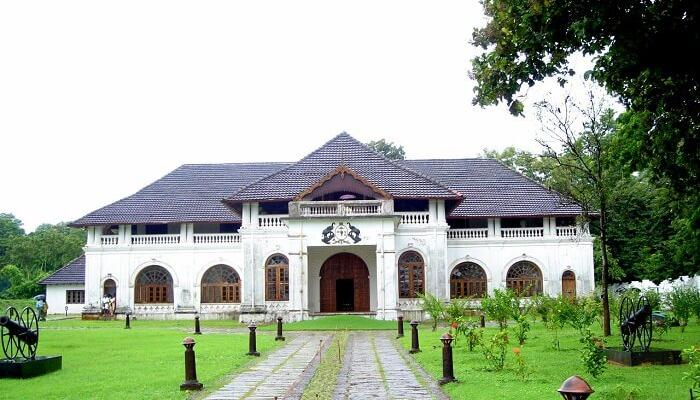
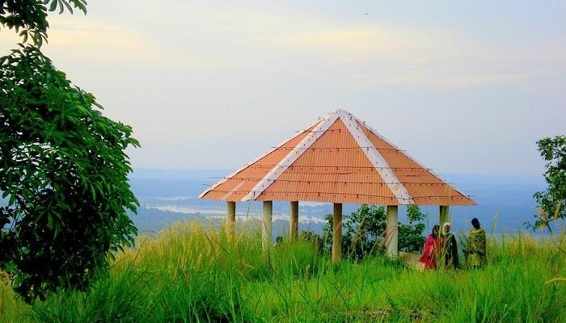
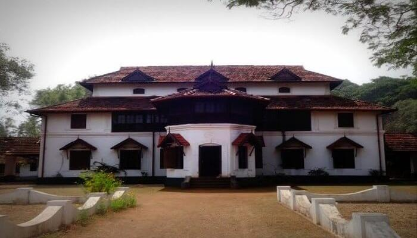

Kerala is a paradise on earth and the major attractions in Munnar, Alleppey, and Kumarakom would prove that well by letting you witness its beauty. But, if you also wish to get a glimpse of the state’s cultural beauty in all its glory, then you’ve got to include these best places to visit in Thrissur in your bucket list. Besides, there are some less commercialized places like Mala, Krishan Kotta, and Kaladi which you can also visit to know about the glorious past. When in Krishnan Kotta, don’t forget to taste the delicious fish Karimeen which is the official fish of Kerala. With innumerable temples, hillocks, beaches, and more, Thrissur has something for every type of traveler. So, irrespective of whether you’re a culture vulture or a nature admirer, take a note of these best tourist places in Thrissur that you must visit on your next trip down south.
Top Places To Visit In Thrissur
Shakthan Thampuran Palace – Marvel At The Intricate Beauty
No list of best places to visit in Thrissur can ever be complete without including the Shakthan Thampuran Palace in it. Built by Raja Rama Varma IC in 1791, the palace’s Dutch-style architecture is a captivating sight to behold, especially for art admirers. Though, what makes it unique are the attractions inside it like a small museum that showcases antiquities and old relics. Timings: Open on all days of week from 9:30 AM to 4:30 PM except every Monday Entry Fees: INR 10 for adults, INR 5 for kids, and INR 30 for cameras TripAdvisor Rating: 4/5 Location: Stadium Rd, Chembukkav, Thrissur, Kerala
Vilangankunnu – Get Ready To Explore More

f you’re looking for surreal places to visit in and around Thrissur, then Vilangankunnu is the ideal spot to be. This beautiful hillock is located 7 km away from the city and has been converted into an amusement park. While there are rides for kids in the park, the gorgeous views make it equally worth visiting for others. Timings: Open on all days from 9:00 AM to 5:00 PM Entry Fees: INR 10 for adults and INR 5 for kids TripAdvisor Rating: 3.5/5 Location: Amala Nagar, Thrissur, Kerala
Kollengode Palace – Marvel At The Architecture

While Thrissur is home to many palaces, the Kollengode Palace is the most popular one, though after the Sakthan Thampuran Palace. Its rich architecture and famous legends make it an old-world charm, which is definitely worth witnessing on your trip. After you’re done taking a tour of the palace, you can also visit the Mural Art Museum housed inside the palace. Timings: You can visit the palace at any time if you have the required permit. Entry Fees: There is no entry fee for visiting this place. Location: Kollengode Kunisseri Road, Kollengode, Kerala